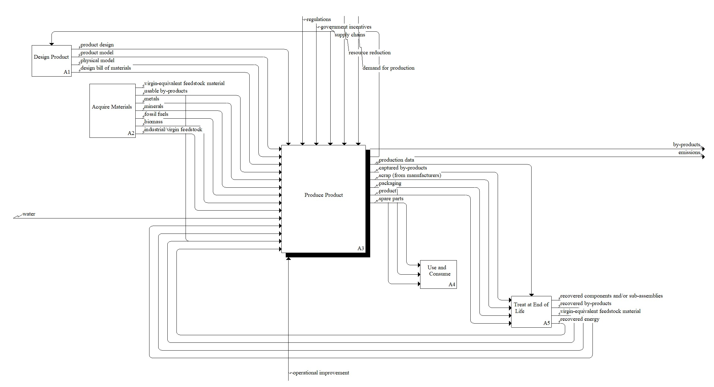

Description
Owning Diagram: A0: Produce in a circular economy
A3: Produce Product
design bill of materials
product model
physical model
fossil fuels
minerals
metals
biomass
industrial/virgin feedstock
usable by-products
virgin-equivalent feedstock material
water
recovered by-products
recovered energy
recovered components and/or sub-assemblies
by-products
emissions
production data
scrap (from manufacturers)
captured by-products
spare parts
packaging
product
product design
regulations
government incentives
supply chains
resource reduction
demand for production
operational improvement
